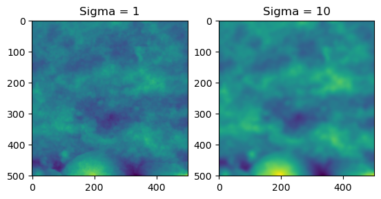
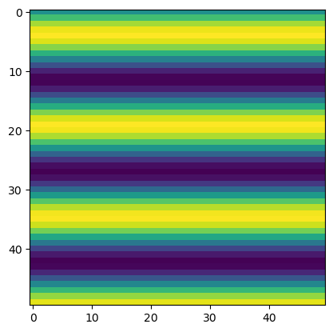
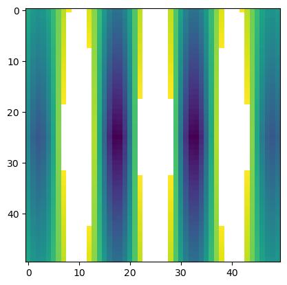

file = 'BYGS008_top_segment_500samp_10cm_interp089.txt'
image = np.loadtxt(file)Data
A simple API for importing and preparing data for use. Mostly manipulates numpy arrays to generate profiles and sections
We will be treating 2D arrays as rasters. Basically load any .csv, .txt or other file into a numpy array as you would normally. Each entry should be the height data for it’s respective pixel.
Let’s try out the simplest method, a text file containing an (M,N) array compatible with Numpy. If you’d like to try your own data, simply change the file below and the loading function (e.g. if you have a .csv just change the delimeter in the np.loadtxt() call).
Let’s have a look at the image
plt.imshow(image)
plt.show()image.shape(501, 501)It can be very useful to study how roughness parameters change with regards to their orientation. The following function helps produce a range of profiles rotating around the central point of the image or array
gen_rot_prof
gen_rot_prof (array, deg=180, increment=1)
Generates an array of rotational profiles through to deg, in even increments of increment. Uses OpenCV and Imutils to rotate the array around the center of the array/raster/image, extracts the middle row.
| Type | Default | Details | |
|---|---|---|---|
| array | 2D array of height values | ||
| deg | int | 180 | Number of degrees to rotate through, i.e 180 gives full 360 rotation |
| increment | int | 1 | deg/increment = number of evenly spaced profiles to calculate. |
Numpy likes the data in various forms for linear algebra, here is a helper to convert an (M,N) matrix into a (n,(X,Y,Z)) matrix.
image2xyz
image2xyz (im)
Converts 2D (m,n) image/array to xyz coordinates. Used for plane levelling
xyz2image
xyz2image (xyz)
Helper to convert back from xyz (n,3) arrays to (M,N) image/matrices
| Details | |
|---|---|
| xyz | (n,3) shape array |
im_xyz = image2xyz(image)
im_xyz[:5]array([[ 0. , 0. , -0.89188266],
[ 1. , 0. , -0.8919338 ],
[ 2. , 0. , -0.89193225],
[ 3. , 0. , -0.89193505],
[ 4. , 0. , -0.89192402]])Levelling and Form Removal
In order to perform roughness calculations it is recommended to level the data and remove the underlying form.This produces a S-F surface from the primary surface if we are using Standards terms. Because surfaces are always digitized and discretized in some way, the actual surface has to be modelled using some function. ISO software standards recommend using a Bicubic spline to remove the form. Because the function is an assumption, the user should choose their function based on their scientific knowledge of the surface and the goals of their research. Multiple functions can be tested and the results observed. Here I provide a least-squares solution to the problem, computing the results in the same shape as the original image and subtract them.
With the underlying form modeled, the funciton can be sampled from to generate a larger number of samples.
remove_form
remove_form (im, degree=3, return_form=False)
Remove the form of the raster by fitting a polynomial of specified degree and subtracting it.
| Type | Default | Details | |
|---|---|---|---|
| im | 2D Numpy array or array like | ||
| degree | int | 3 | Polynomial degree to remove |
| return_form | bool | False | Return the form/computed polynomial values instead of removing them from im |
plane_level
plane_level (im, norm=True, return_form=False)
Level an (m,n) array by computing the best fit plane and subtracting the results. Thin wrapper around remove_form with degree = 1.
| Type | Default | Details | |
|---|---|---|---|
| im | Numpy array or array like | ||
| norm | bool | True | Normalize the data by subtracting the mean |
| return_form | bool | False |
w = np.array([[1,1,1],[0,0,0],[-1,-1,-1]])
u = np.array([[1,0,-1]]*3)
test_close(plane_level(w), np.zeros(w.shape))
test_close(plane_level(u), np.zeros(u.shape))
test_fail(plane_level, kwargs = dict(xyz=np.array([1])))
test_fail(plane_level, kwargs = dict(xyz=np.array([[1,1]])))fig = plt.figure()
ax = fig.add_subplot(1, 2, 1)
imgplot = plt.imshow(plane_level(image))
ax.set_title('Levelled image')
ax = fig.add_subplot(1, 2, 2)
imgplot = plt.imshow(plane_level(image, return_form = True))
ax.set_title('Levelling plane')Text(0.5, 1.0, 'Levelling plane')
image_f = remove_form(plane_level(image))
image_form = remove_form(plane_level(image), return_form = True)
fig = plt.figure()
ax = fig.add_subplot(1, 2, 1)
imgplot = plt.imshow(image_f)
ax.set_title('Formless Image')
ax = fig.add_subplot(1, 2, 2)
imgplot = plt.imshow(image_form)
ax.set_title('Polynomial')Text(0.5, 1.0, 'Polynomial')Noise and smoothing
Similarly, it is recommended to remove noise and attenuate high frequency features. We achieve this through the use of a gaussian filter.
smooth_image
smooth_image (array, sigma=None, alpha=None, cutoff=None, axis=None, **kwargs)
Removes high frequency/wavelength features (‘noise’) by applying a gaussian filter on the image. Thin wrapper of scipy.ndimage.gaussian_filter.
If all sigma,alpha,cutoff = None, sigma defaults to (np.sqrt(np.log(2)/np.pi)) * cutoff
If sigma is not none, sigma takes priority over any alpha or cutoff provided.
Refer to ISO 11562:1997 for reasoning behind alpha and cutoff.
| Type | Default | Details | |
|---|---|---|---|
| array | Numpy array or array like | ||
| sigma | NoneType | None | Standard deviation for gaussian kernel Useful for determining the wavelength of the low pass filter. |
| alpha | NoneType | None | Used in gaussian weighting function, defaults to np.sqrt(np.log(2)/np.pi) |
| cutoff | NoneType | None | Cutoff wavelength, defaults to 1 |
| axis | NoneType | None | Axis along which to apply filter |
| kwargs |
image_f_s = smooth_image(image_f,cutoff=1)
fig = plt.figure()
ax = fig.add_subplot(1, 2, 1)
imgplot = plt.imshow(image_f_s)
ax.set_title('Sigma = 1')
ax = fig.add_subplot(1, 2, 2)
imgplot = plt.imshow(smooth_image(image_f,cutoff=10))
ax.set_title('Sigma = 10')Text(0.5, 1.0, 'Sigma = 10')
Sections
It can be useful to study subsections of surfaces. The following helpers assist with this process. Otherwise, normal manipulation of numpy arrays is always possible.
gen_sections
gen_sections (image, how='square', number=100)
Generates sections of the array/image, either in square, horizontal, or vertical sections. Useful for studying the change of parameters over the surface. Mostly wraps around np.hsplit and np.vsplit. Note, if ‘number’ does not divide into the array evenly, the bottom/side remains will not be included.
| Type | Default | Details | |
|---|---|---|---|
| image | 2D array (or arraylike) of height values | ||
| how | str | square | How to subdivide the array, options are: ‘square’, ‘row’, ‘column’ |
| number | int | 100 | Number of sections to produce |
a_10000 = np.arange(100*100).reshape(100,100)
test_eq(gen_sections(a_10000)[0],a_10000[:10,:10])
a_523 = np.arange(523*523).reshape(523,523)
a_520 = np.arange(520*520).reshape(520,520)
test_eq(gen_sections(a_523).shape,gen_sections(a_520).shape)test_sections = np.load('example_sections.npy')
test_sections.shape(100, 50, 50)image_sections = gen_sections(image)Now, because we’ve applied all of our preprocessing steps to the original image. We can export it for use later. We should also save our profiles and sections. The sections should be in .npy format because they are 3D.
np.savetxt('example.txt', image_f_s)
np.savetxt('example_profiles.txt', gen_rot_prof(image_f_s))
np.save('example_sections.npy', image_sections)And we can load them back in just to check.
profiles = np.loadtxt('example_profiles.txt')
plt.imshow(profiles)
plt.show()Utilities
Various useful functions which are used elsewhere
compute_parameters
compute_parameters (array, parameter_list:list, valid_module=None, to_df:bool=False, **kwargs)
Computes a set of parameters for a given array, provide a list of parameters (as strings of their respective functions e.g. [‘Ra’,‘Rms’]) and a module to verify against (might require some module aliasing, see CLI notebook for example use). Returns a list of results or a dataframe.
| Type | Default | Details | |
|---|---|---|---|
| array | Input array to be calculate parameters on | ||
| parameter_list | list | List of parameters to calculate as strings | |
| valid_module | NoneType | None | module to generate functions from, used to check user input, see rough.cli:rough |
| to_df | bool | False | Return the parameters as a pandas dataframe, with columns set as the parameter names |
| kwargs |
distance_matrix
distance_matrix (shape:tuple, center:(<class'int'>,<class'int'>)=None, sections=False)
Returns a (m,n) matrix containing distance values from center coordinates.
if Sections = True. Returns (x,m,n) where x is the number of input sections.
| Type | Default | Details | |
|---|---|---|---|
| shape | tuple | Shape of array, used to calculate center if not given | |
| center | (<class ‘int’>, <class ‘int’>) | None | Central point from which to calculate distances, if None, defaults to x//2, y//2 |
| sections | bool | False | If True, takes the first element of shape as the number of stack in image |
a25 = np.arange(25).reshape(5,5)a25.shape(5, 5)a25t = np.tile(a25,(5,5,5))test_eq(a25t[0],a25t[4])test_shape = (101,101)
#eps = 1e-05
test_eq(distance_matrix(test_shape), np.rot90(distance_matrix(test_shape)))
test_eq(distance_matrix(test_shape), np.flipud(distance_matrix(test_shape)))
test_eq(distance_matrix(test_shape), np.fliplr(distance_matrix(test_shape)))
test_ne(distance_matrix(test_shape), np.zeros(test_shape))
test_ne(distance_matrix(test_shape), np.ones(test_shape))normalize
normalize (im, axis=1, how='center', feature_range=None)
Normalize the input array along given axis. Typically used to ‘center’ rows/columns/areas in order to calculate parameters. how can be: - ‘center’: Subtract the mean from the array along the axis, - ‘l1’ - ‘l2’ - ‘standardize’ : Subtract the mean and divide by the standard deviation along given axis - ‘minmax’ : ‘standardize’ within ‘feature_range’. See use in Sal
Mostly a reimplementation of scalers from sklearn with explicit formulation.
| Type | Default | Details | |
|---|---|---|---|
| im | Array or stack of array to normalize | ||
| axis | int | 1 | Axis along which to normalize |
| how | str | center | normalization method: ‘center’, ‘standardize’, ‘minmax’ |
| feature_range | NoneType | None | Tuple containing the feature range for minmax |
#For testing normalize
from sklearn.preprocessing import MinMaxScalera_400 =np.arange(-200,200).reshape(-1,1)
a_rand = np.random.randint(-1000,1000,1000).reshape(-1,1)
scaler = MinMaxScaler((-1,1))
test_eq((a_400 - np.mean(a_400,axis = 0,keepdims = True)), normalize(a_400, axis = 0, how = 'center'))
test_eq((a_rand - np.mean(a_rand,axis = 0, keepdims = True)), normalize(a_rand,axis = 0, how = 'center'))
test_close(scaler.fit_transform(a_400), normalize(a_400,axis = 0, how = 'minmax'), eps = 1e-10)
test_close(scaler.fit_transform(a_rand), normalize(a_rand,axis = 0, how = 'minmax'), eps = 1e-10)image_f_s.shape(501, 501)from scipy.signal import correlatecor_result = correlate(image_f_s, image_f_s,mode='same')
plt.imshow(cor_result)
plt.show()
correlate(np.ones((3,3)), np.ones((3,3)), mode = 'same')array([[4., 6., 4.],
[6., 9., 6.],
[4., 6., 4.]])rand_arr = np.random.rand(501,501)
rand_cor = correlate(rand_arr,rand_arr,mode='same')
plt.imshow(rand_cor)
plt.show()
(np.amax(rand_cor),np.amin(rand_cor),np.ptp(rand_cor))(83755.5666617089, 15717.948579544685, 68037.61808216422)rand_ncor = normalize(rand_cor,axis = None, how= 'minmax')(np.amax(rand_ncor),np.amin(rand_ncor),np.ptp(rand_ncor))(1.0, -1.0, 2.0)plt.imshow(rand_ncor)
plt.show()rand_dist = distance_matrix(rand_ncor.shape)rand_where = np.where(rand_ncor <= 0.2, rand_dist, np.NaN)
np.nanmin(rand_where)36.76955262170047x = np.linspace(0, 20)
y = np.sin(x)
sin_wave = np.broadcast_to(y,(50,50))plt.imshow(sin_wave)
plt.show()plt.imshow(sin_wave.T)
plt.show()
sin_cor = correlate(sin_wave,sin_wave,mode='same')
plt.imshow(sin_cor)
plt.show()
ncor_sin = normalize(sin_cor, axis = None, how = 'minmax')
plt.imshow(ncor_sin)
plt.show()ncor_sin_2 = np.where(ncor_sin <=0.2, ncor_sin, np.NaN)
plt.imshow(ncor_sin_2)
plt.show()
sint_cor = correlate(sin_wave.T,sin_wave.T,mode='same')
plt.imshow(sint_cor)
plt.show()
sin_cor[-1,-1]-302.59161125378563(np.ptp(cor_result),np.max(cor_result),np.min(cor_result))(0.12309696498814524, 0.10140944660491391, -0.021687518383231318)